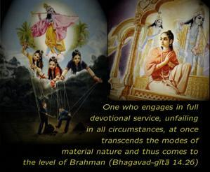
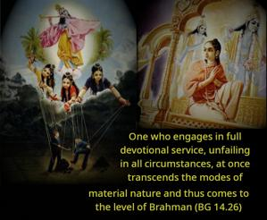
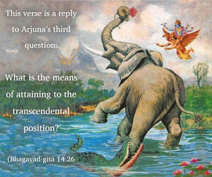
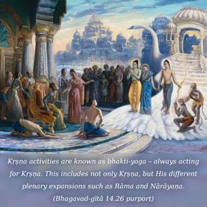
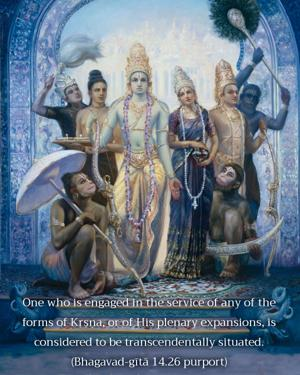

One who engages in full devotional service, unfailing in all circumstances, at once transcends the modes of material nature and thus comes to the level of Brahman.





This verse is a reply to Arjuna’s third question: What is the means of attaining to the transcendental position? As explained before, the material world is acting under the spell of the modes of material nature. One should not be disturbed by the activities of the modes of nature; instead of putting his consciousness into such activities, he may transfer his consciousness to Kṛṣṇa activities. Kṛṣṇa activities are known as bhakti-yoga – always acting for Kṛṣṇa. This includes not only Kṛṣṇa, but His different plenary expansions such as Rāma and Nārāyaṇa. He has innumerable expansions. One who is engaged in the service of any of the forms of Kṛṣṇa, or of His plenary expansions, is considered to be transcendentally situated. One should also note that all the forms of Kṛṣṇa are fully transcendental, blissful, full of knowledge and eternal. Such personalities of Godhead are omnipotent and omniscient, and they possess all transcendental qualities. So if one engages himself in the service of Kṛṣṇa or His plenary expansions with unfailing determination, although these modes of material nature are very difficult to overcome, one can overcome them easily. This has already been explained in the Seventh Chapter. One who surrenders unto Kṛṣṇa at once surmounts the influence of the modes of material nature. To be in Kṛṣṇa consciousness or in devotional service means to acquire equality with Kṛṣṇa. The Lord says that His nature is eternal, blissful and full of knowledge, and the living entities are part and parcel of the Supreme, as gold particles are part of a gold mine. Thus the living entity, in his spiritual position, is as good as gold, as good as Kṛṣṇa in quality. The difference of individuality continues, otherwise there would be no question of bhakti-yoga. Bhakti-yoga means that the Lord is there, the devotee is there, and the activity of exchange of love between the Lord and the devotee is there. Therefore the individuality of two persons is present in the Supreme Personality of Godhead and the individual person, otherwise there would be no meaning to bhakti-yoga. If one is not situated in the same transcendental position with the Lord, one cannot serve the Supreme Lord. To be a personal assistant to a king, one must acquire the qualifications. Thus the qualification is to become Brahman, or freed from all material contamination. It is said in the Vedic literature, brahmaiva san brahmāpy eti. One can attain the Supreme Brahman by becoming Brahman. This means that one must qualitatively become one with Brahman. By attainment of Brahman, one does not lose his eternal Brahman identity as an individual soul.